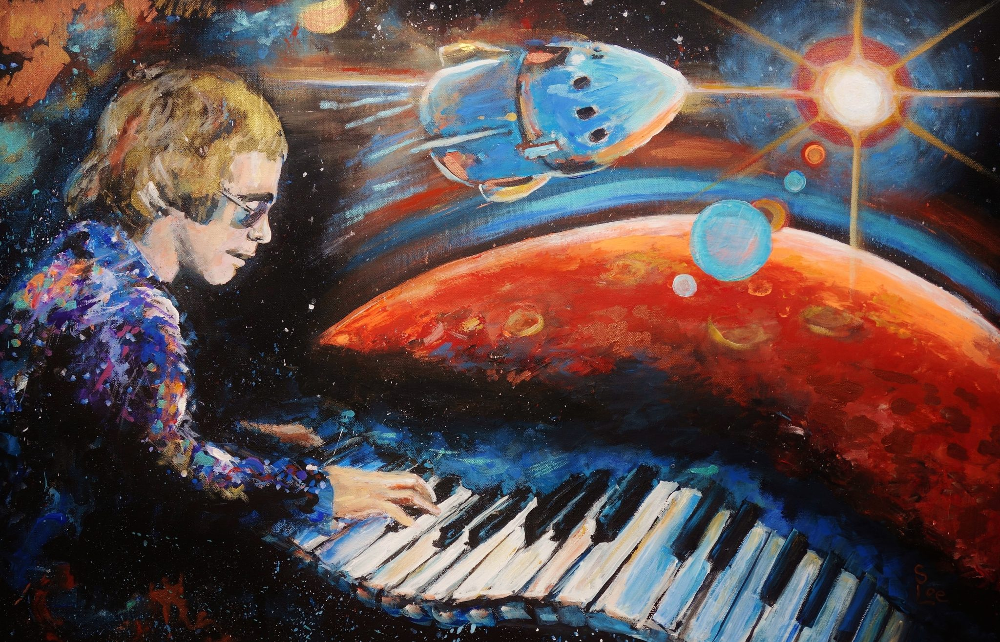

-Многие забывает о том что есть ещё и песни о космосе
-Вот сколько например песен знаете вы?
-Я уверена что вы назавёте не много, ну точнно меньше 10.
-Но песни о космсе это около 15 процент от всей музыки.
-Ну чтож, приступим к нашим топ 10 лучших песен о космосе.

1)"Трава у дома"
Легенда советского спейс-рока, исполненная группой «Земляне».
2)"Созвездия над нами таинственно мерцают…"
Ко Дню космонавтики 2018 года вышла 70 серия российского мультика для детей «Маши и Медведя»
3)"Снаряжаем мы ракету…"
Хит написал на стыке тысячелетий Андрей Варламов для шоу-группы «Улыбка» на слова Г.Бойко.
4)"Притяжение земли"
Незабвенная советская классика в исполнении Льва Лещенко.
5)"Я верю, друзья…"
В 60-е годы прошлого века в космос полетели первопроходцы космоса. Эта песня в исполнении Владимира Трошина была неофициальным гимном советской космонавтики.
6)"Если очень захотеть, можно в космос полететь…"
Это классическая клубная электронная музыка от Эдуарда Губина, более известного, как DJ Cosmonaut.
7)"Считай звезды"
Лиричную песню о любви и космических расстояниях команда «Волшебники двора» исполнила в 2010 году в Ростове-на-Дону.
8)"Песня косманавта"
Знаменитая песня 1960-х годов в исполнении Владимира Царского и Виктора Селиванова, внушающая гордость за тяжкий путь космонавтов.
9)"Я – Земля"
Нежная песня 1963 года из фильма «Мечте навстречу», отражающая голосом Ольги Воронец всю грусть матерей и их надежду на то, что дети-космонавты обязательно вернутся.
10)"Ты мечтаешь о дальних полётах"
Лиричный дуэт Майи Кристалинской и Иосифа Кобзона, который отразил тягу к космосу и долгий путь, который космонавт проходит, прежде чем взойти на трап.